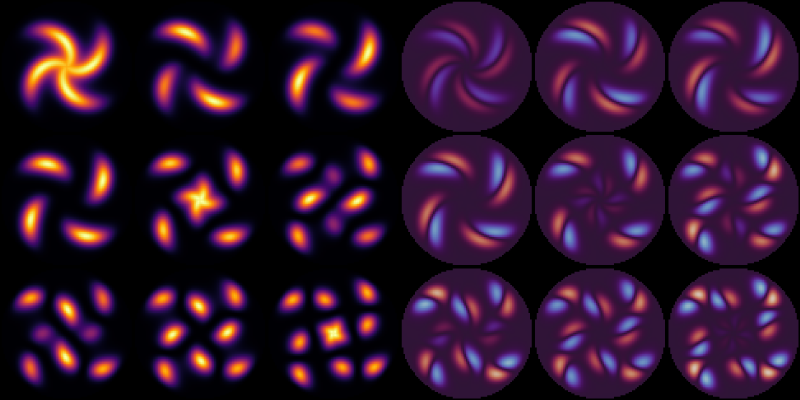

Free fermions on a 2D grid
For free fermions, one can work in the single particle picture to get a better scaling with the size of the system. FermionicHilbertSpaces.jl contains some features to help with this.
using FermionicHilbertSpacesusing Plots, LinearAlgebraimport FermionicHilbertSpaces: add!! # Import add!! for efficient Hamiltonian constructionusing Arpack # For sparse eigenvalue decompositionDefine a grid
We'll look at a system defined on a disc. Let's define a square grid and then cut out a disc in the middle
@fermions fN = 40xs, ys = -N:N, -N:Nindomain(xy) = norm(xy) < Nsquare_grid = [indomain(xy) ? xy : missing for xy in Iterators.product(xs, ys)]disc = collect(skipmissing(square_grid))shifts = [(1, 0), (0, 1), (-1, 0), (0, -1)]neighbours(Nx, Ny) = ((Nx + dx, Ny + dy) for (dx, dy) in shifts if indomain((Nx + dx, Ny + dy)))H = single_particle_hilbert_space(f, disc)5013-dimensional SingleParticleHilbertSpace
Parent: ConstrainedSpace(f[(-8, -39), (-7, -39), ..., (7, 39), (8, 39)], 5013-dim)For plotting heatmaps later, we need a function to map a vector over the disc to a matrix on the 2d grid
function vec_to_square_grid(v::AbstractVector{T}) where T count = 0 vals = Vector{Union{T,Missing}}(undef, length(square_grid)) for (n, xy) in enumerate(square_grid) if ismissing(xy) vals[n] = missing else count += 1 vals[n] = v[count] end end return reshape(vals, size(square_grid))endvec_to_square_grid (generic function with 1 method)Construct hamiltonian
Let's define a quadratic hamiltonian with a spiral chemical potential and hopping
function potential(xy) θ = atan(xy...) r = norm(xy) / N 5 * cos(2 * (θ - 2 * r))^2 * exp(r)endhopping(xy1, xy2) = Nhopping (generic function with 1 method)Since we are dealing with many fermions, symbolic sums may take a long time. To get better performance, we will use the function add!! to update the symbolic hamiltonian in place. For this, it is important to initialize the Hamiltonian with the correct type. We do this by making a simple hamiltonian and then call zero to get an empty hamiltonian of a matching type.
ham = zero(1.0 * f[0, 0] * f[1, 1] + 1.0)0.0INow we can build the hamiltonian
for xy in disc add!!(ham, potential(xy) * f[xy]' * f[xy]) for nbr in neighbours(xy...) add!!(ham, hopping(nbr, xy) * f[nbr]' * f[xy] + hc) endendAnd get a matrix representation of it on the single particle hilbert space
mat = representation(ham, H)5013×5013 SparseArrays.SparseMatrixCSC{Float64, Int64} with 24749 stored entries:
⎡⠻⣦⡀⠀⠀⠀⠀⠀⠀⠀⠀⠀⠀⠀⠀⠀⠀⠀⠀⠀⠀⠀⠀⠀⠀⠀⠀⠀⠀⠀⠀⠀⠀⠀⠀⠀⠀⠀⠀⠀⎤
⎢⠀⠈⠻⣦⡀⠀⠀⠀⠀⠀⠀⠀⠀⠀⠀⠀⠀⠀⠀⠀⠀⠀⠀⠀⠀⠀⠀⠀⠀⠀⠀⠀⠀⠀⠀⠀⠀⠀⠀⠀⎥
⎢⠀⠀⠀⠈⠻⣦⡀⠀⠀⠀⠀⠀⠀⠀⠀⠀⠀⠀⠀⠀⠀⠀⠀⠀⠀⠀⠀⠀⠀⠀⠀⠀⠀⠀⠀⠀⠀⠀⠀⠀⎥
⎢⠀⠀⠀⠀⠀⠈⢿⣷⣄⠀⠀⠀⠀⠀⠀⠀⠀⠀⠀⠀⠀⠀⠀⠀⠀⠀⠀⠀⠀⠀⠀⠀⠀⠀⠀⠀⠀⠀⠀⠀⎥
⎢⠀⠀⠀⠀⠀⠀⠀⠙⢿⣷⣄⠀⠀⠀⠀⠀⠀⠀⠀⠀⠀⠀⠀⠀⠀⠀⠀⠀⠀⠀⠀⠀⠀⠀⠀⠀⠀⠀⠀⠀⎥
⎢⠀⠀⠀⠀⠀⠀⠀⠀⠀⠙⢿⣷⣄⠀⠀⠀⠀⠀⠀⠀⠀⠀⠀⠀⠀⠀⠀⠀⠀⠀⠀⠀⠀⠀⠀⠀⠀⠀⠀⠀⎥
⎢⠀⠀⠀⠀⠀⠀⠀⠀⠀⠀⠀⠙⢿⣷⣄⠀⠀⠀⠀⠀⠀⠀⠀⠀⠀⠀⠀⠀⠀⠀⠀⠀⠀⠀⠀⠀⠀⠀⠀⠀⎥
⎢⠀⠀⠀⠀⠀⠀⠀⠀⠀⠀⠀⠀⠀⠙⢿⣷⣄⠀⠀⠀⠀⠀⠀⠀⠀⠀⠀⠀⠀⠀⠀⠀⠀⠀⠀⠀⠀⠀⠀⠀⎥
⎢⠀⠀⠀⠀⠀⠀⠀⠀⠀⠀⠀⠀⠀⠀⠀⠙⢿⣷⣄⠀⠀⠀⠀⠀⠀⠀⠀⠀⠀⠀⠀⠀⠀⠀⠀⠀⠀⠀⠀⠀⎥
⎢⠀⠀⠀⠀⠀⠀⠀⠀⠀⠀⠀⠀⠀⠀⠀⠀⠀⠙⢿⣷⣄⠀⠀⠀⠀⠀⠀⠀⠀⠀⠀⠀⠀⠀⠀⠀⠀⠀⠀⠀⎥
⎢⠀⠀⠀⠀⠀⠀⠀⠀⠀⠀⠀⠀⠀⠀⠀⠀⠀⠀⠀⠙⢿⣷⣄⠀⠀⠀⠀⠀⠀⠀⠀⠀⠀⠀⠀⠀⠀⠀⠀⠀⎥
⎢⠀⠀⠀⠀⠀⠀⠀⠀⠀⠀⠀⠀⠀⠀⠀⠀⠀⠀⠀⠀⠀⠙⢿⣷⣄⠀⠀⠀⠀⠀⠀⠀⠀⠀⠀⠀⠀⠀⠀⠀⎥
⎢⠀⠀⠀⠀⠀⠀⠀⠀⠀⠀⠀⠀⠀⠀⠀⠀⠀⠀⠀⠀⠀⠀⠀⠙⢿⣷⣄⠀⠀⠀⠀⠀⠀⠀⠀⠀⠀⠀⠀⠀⎥
⎢⠀⠀⠀⠀⠀⠀⠀⠀⠀⠀⠀⠀⠀⠀⠀⠀⠀⠀⠀⠀⠀⠀⠀⠀⠀⠙⢿⣷⣄⠀⠀⠀⠀⠀⠀⠀⠀⠀⠀⠀⎥
⎢⠀⠀⠀⠀⠀⠀⠀⠀⠀⠀⠀⠀⠀⠀⠀⠀⠀⠀⠀⠀⠀⠀⠀⠀⠀⠀⠀⠙⢿⣷⣄⠀⠀⠀⠀⠀⠀⠀⠀⠀⎥
⎢⠀⠀⠀⠀⠀⠀⠀⠀⠀⠀⠀⠀⠀⠀⠀⠀⠀⠀⠀⠀⠀⠀⠀⠀⠀⠀⠀⠀⠀⠙⢿⣷⣄⠀⠀⠀⠀⠀⠀⠀⎥
⎢⠀⠀⠀⠀⠀⠀⠀⠀⠀⠀⠀⠀⠀⠀⠀⠀⠀⠀⠀⠀⠀⠀⠀⠀⠀⠀⠀⠀⠀⠀⠀⠙⢿⣷⡀⠀⠀⠀⠀⠀⎥
⎢⠀⠀⠀⠀⠀⠀⠀⠀⠀⠀⠀⠀⠀⠀⠀⠀⠀⠀⠀⠀⠀⠀⠀⠀⠀⠀⠀⠀⠀⠀⠀⠀⠀⠈⠻⣦⡀⠀⠀⠀⎥
⎢⠀⠀⠀⠀⠀⠀⠀⠀⠀⠀⠀⠀⠀⠀⠀⠀⠀⠀⠀⠀⠀⠀⠀⠀⠀⠀⠀⠀⠀⠀⠀⠀⠀⠀⠀⠈⠻⣦⡀⠀⎥
⎣⠀⠀⠀⠀⠀⠀⠀⠀⠀⠀⠀⠀⠀⠀⠀⠀⠀⠀⠀⠀⠀⠀⠀⠀⠀⠀⠀⠀⠀⠀⠀⠀⠀⠀⠀⠀⠀⠈⠻⣦⎦Compute eigenstates and momentum operators and plot results
Compute a few eigenvalues/eigenvectors (lowest energy states)
vals, vecs = eigs(mat; nev=3^2, which=:SR, v0=map(x -> eltype(mat)(first(x)), disc)[:]);Calculate momentum operators px, py and define a function to calculate angular momentum density
px = zero(1im * ham)py = zero(px)for xy in disc xy .+ (1, 0) in disc && add!!(px, 1im * f[xy.+(1, 0)]' * f[xy] + hc) xy .+ (0, 1) in disc && add!!(py, 1im * f[xy.+(0, 1)]' * f[xy] + hc)endpxmat = representation(px, H)pymat = representation(py, H);function angular_momentum(v) px = pxmat * v py = pymat * v vec_to_square_grid(map((px, py, ψ, r) -> imag(conj(ψ) * dot(r, (-py, px))), px, py, v, disc))endangular_momentum (generic function with 1 method)Plot the number density and angular momentum density of the lowest energy quasiparticles
kwargs = (; ticks=0, cbar=false, aspectratio=1, margins=-2Plots.mm, background_color=:black, size=400 .* (1, 1))p_density = plot([heatmap(xs, ys, vec_to_square_grid(map(abs2, v))) for v in eachcol(vecs)]...; kwargs...)p_angular = plot([heatmap(xs, ys, angular_momentum(v); c=:twilight, clims=1.5 * N^(-1.5) .* (-1, 1)) for v in eachcol(vecs)]...; kwargs...)plot(p_density, p_angular; layout=(1, 2), size=400 .* (2, 1))
This page was generated using Literate.jl.